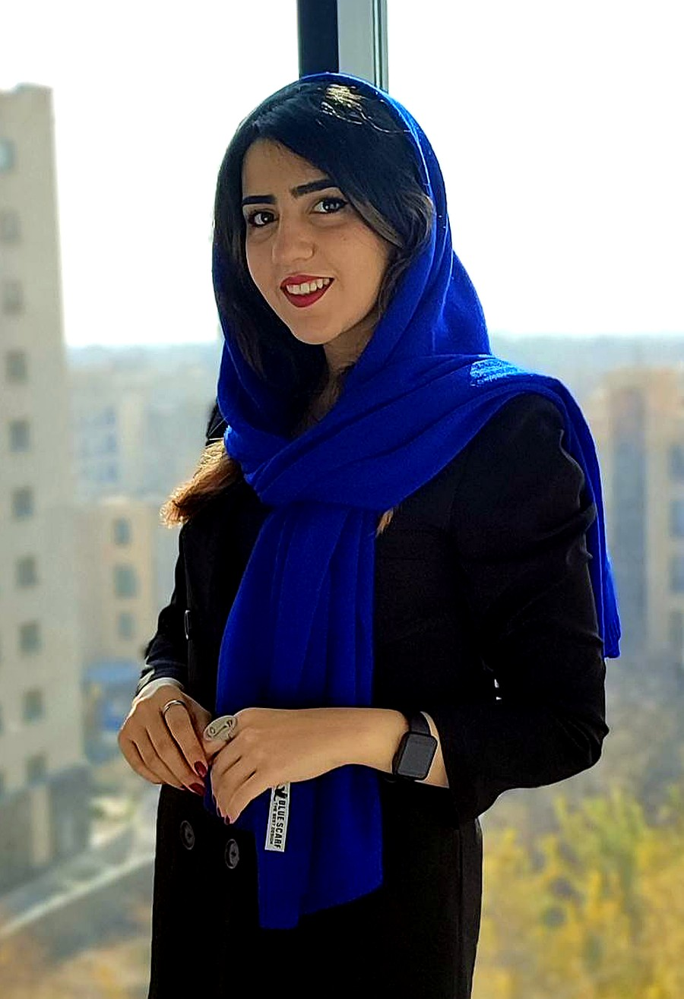

Yasamin Alemzadeh — AI/ML engineer & researcher working at the intersection of computational immunology, biomedical signals, and representation learning. For the past two years, my main research focus has been computational immunology and immune-system simulation, alongside self-supervised representation learning for EEG and IMU signals. B.Sc. Computer Science, Shahid Beheshti University.
یاسمین عالمزاده — پژوهشگر و مهندس هوش مصنوعی با تمرکز بر یادگیری ماشین برای دادههای زیستی. در دو سال اخیر، محور اصلی پژوهشم ایمونولوژی محاسباتی و شبیهسازی سیستم ایمنی بوده است؛ در کنار آن، روی یادگیری بازنمایی خودنظارتی برای سیگنالهای EEG و IMU کار کردهام. فارغالتحصیل علوم کامپیوتر از دانشگاه شهید بهشتی تهران.

I'm a Computer Science graduate from Shahid Beheshti University (Tehran). Over the past two years, my primary research focus has been computational immunology — developing bioinformatics pipelines and simulators to model B-cell receptor repertoire evolution and diversity. Along this line, I developed Ancestra-Echo as a research simulator. Alongside that work, I study representation learning for biomedical time-series, particularly EEG and IMU.
I care about models that don't just perform well, but can be validated against real biological data and evaluated for reliability and interpretability. My technical work spans hybrid deep learning (CNN–LSTM, CNN–Transformer), self-supervised and contrastive methods (SimCLR, MoCo), sequence alignment, statistical validation, and explainable AI.
من فارغالتحصیل علوم کامپیوتر از دانشگاه شهید بهشتی تهران هستم. در دو سال اخیر، محور اصلی پژوهشم ایمونولوژی محاسباتی بوده است؛ با تمرکز بر توسعهی خطلولهها و شبیهسازهای زیستاطلاعاتی برای مدلسازی تکامل و تنوع رسپرتوار گیرندههای B-cell. در این مسیر، Ancestra-Echo را بهعنوان یک شبیهساز پژوهشی توسعه دادهام. در کنار آن، روی یادگیری بازنمایی برای سریهای زمانی زیستی، بهویژه EEG و IMU، کار میکنم.
برای من، عملکرد مدل بهتنهایی کافی نیست؛ مدلهای زیستی باید روی دادههای واقعی اعتبارسنجی شوند و از نظر آماری قابلاعتماد و قابلتفسیر باشند. حوزههای فنی مورد استفادهام شامل مدلهای ترکیبی یادگیری عمیق (CNN–LSTM، CNN–Transformer)، روشهای خودنظارستی و کنتراستیو (SimCLR، MoCo)، الاینمنت توالی، اعتبارسنجی آماری و هوش مصنوعی قابلتفسیر است.
My primary research focus over the past two years; bioinformatics pipelines and simulators for modeling B-cell receptor repertoire evolution and diversity, using IGoR, OLGA, ImmuneSIM, and Ancestra-Echo.
محور اصلی پژوهش من در دو سال اخیر؛ توسعهی خطلولهها و شبیهسازهای زیستاطلاعاتی برای مدلسازی تکامل و تنوع رسپرتوار B-cell، با استفاده از IGoR، OLGA، ImmuneSIM و Ancestra-Echo.
Representation learning for temporal and biomedical signals, particularly EEG and IMU data.
یادگیری بازنمایی و خودنظارستی برای استخراج بازنماییهای پایدار از سیگنالهای زمانی و زیستی، بهویژه EEG و IMU.
CNN–LSTM and CNN–Transformer architectures for modeling and classifying multi-channel time-series data.
معماریهای CNN–LSTM و CNN–Transformer برای مدلسازی و دستهبندی سریهای زمانی چندکاناله.
XAI methods for improving model interpretability, reliability, and validation in high-stakes applications.
روشهای XAI برای افزایش تفسیرپذیری، اعتمادپذیری و قابلیت اعتبارسنجی مدلها در کاربردهای حساس.
Applied AI systems for educational applications and cognitive-assessment use cases.
سامانههای هوش مصنوعی کاربردی برای آموزش و ارزیابی شناختی.
Hybrid CNN, LSTM, and Transformer architectures for multi-channel EEG classification, with preprocessing and evaluation including normalization, segmentation, artifact removal, and class labeling. Oct 2024 – Present.
معماریهای ترکیبی CNN، LSTM و Transformer برای دستهبندی سیگنالهای چندکاناله EEG، همراه با پیشپردازش و ارزیابی مدل شامل نرمالسازی، قطعهبندی، حذف آرتیفکت و برچسبگذاری کلاسها. مهر ۱۴۰۳ تاکنون.
GitHub Repository → مخزن گیتهاب ←A research pipeline for time-series representation learning using SimCLR and Transformer-based models, with cross-subject validation. Jun 2024 – Present.
خطلولهای برای یادگیری بازنمایی سریهای زمانی با استفاده از SimCLR و مدلهای Transformer، همراه با اعتبارسنجی بینآزمودنی. خرداد ۱۴۰۳ تاکنون.
GitHub Repository → مخزن گیتهاب ←A multi-stage bioinformatics pipeline for generating, processing, and analyzing synthetic immune repertoires using IGoR, OLGA, AIRRSHIP/ImmuneSIM, and LigoSim, with downstream analysis via MiXCR, scRepertoire, and SONIA. Feb 2025 – Present.
خطلولهای چندمرحلهای برای تولید، پردازش و تحلیل رسپرتوارهای مصنوعی با IGoR، OLGA، AIRRSHIP/ImmuneSIM و LigoSim، همراه با تحلیل downstream با MiXCR، scRepertoire و SONIA. بهمن ۱۴۰۳ تاکنون.
Research in progress در حال انجام1st National Conference on AI in Education and Learning (AIEDU01), CIVILICA-indexed, 2024.
اولین همایش ملی هوش مصنوعی در آموزش و یادگیری، نمایهشده در سیویلیکا، ۱۴۰۳.
Ranked 308th in Region 2 and 891st nationwide among 1,184,130 participants.
رتبه ۸۹۱ کشوری و ۳۰۸ منطقه ۲ در کنکور سراسری ۱۴۰۰، از میان بیش از ۱.۱۸ میلیون شرکتکننده.
Programming and AI Competitions — Iranian Society of New Science and Technology Development, 2025.
مسابقات برنامهنویسی و هوش مصنوعی — انجمن توسعه علوم و فناوریهای نوین ایران، ۱۴۰۴.